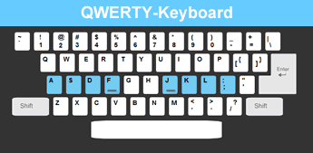
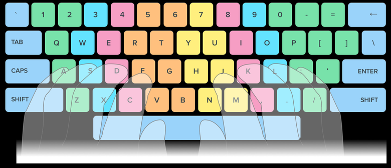

Tips
Finger Placement
- Your fingers should be on the home row keys which are the A, S, D, and F with the left hand and J, K, L, and ; with the right.

- Try to use all your fingers when typing

Addtional Tips
Keep your keyboard home row height as close to elbow level as possible.
Centre the spacebar with your body.
Do not angle or bend your wrists. While typing keep your wrists elevated and as straight as possible.
Avoid hunt-and-peck typing
as it causes strain on the neck from having to look down at the keyboard often.
Don't use more force than needed to press the keys.
When you are not typing make sure to rest your arms and hands. However, never rest your arms, hands or wrist on a sharp edge.
Take a break from typing every 20 to 30 minutes.